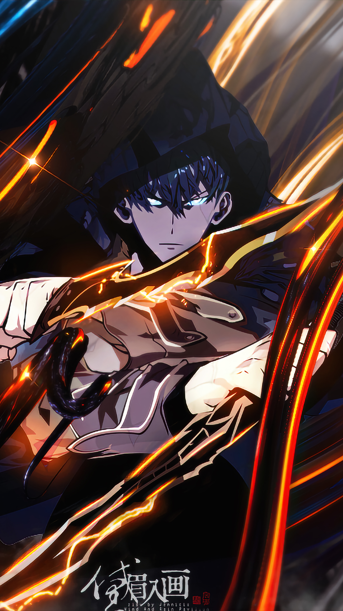

Jinwoo Sung em um momento crucial, mostrando seu poder crescente.

Uma cena icônica com Cha Hae-In, a forte e destemida caçadora.
Sobre Solo Leveling
Solo Leveling é um popular manhwa sul-coreano que segue a jornada de Jinwoo Sung, um caçador de rank E que se torna o caçador mais poderoso do mundo.
Personagens
Conheça os principais personagens: Jinwoo Sung, Cha Hae-In, e muitos outros que compõem esse universo emocionante.
Galeria
Veja mais imagens e cenas icônicas do Solo Leveling na nossa galeria.